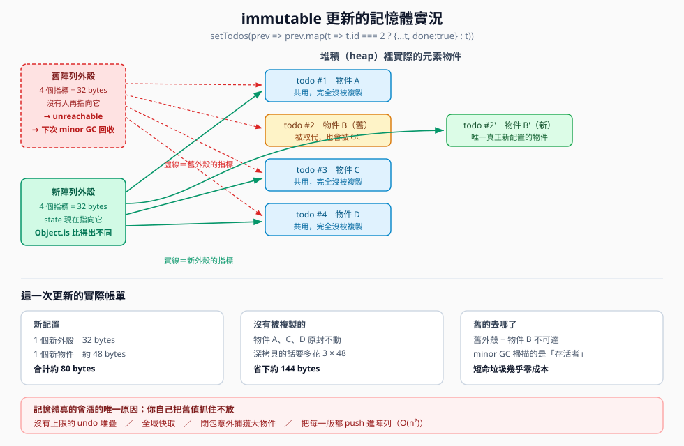

immutable 會不會讓舊值塞滿記憶體
互動版筆記 建立日期 2026-09-07 主題：structural sharing、V8 分代 GC、reachability

圖一 一次 immutable 更新實際新配置了什麼、共用了什麼、舊的去了哪裡
一、先修正一個關鍵誤解
誤解「count + 1 是新增一個新的值，所以會有過多值在記憶體中」
- 語意層 這句話是對的，你確實產生了一個新的值
- 記憶體層 不成立。number 是 primitive（原始型別），它是「值」不是「物件」
- 小整數還走 Smi（Small Integer）最佳化，V8 直接把數字編碼在指標的位元裡，根本不進堆積
- 所以 setCount(count + 1) 的記憶體成本基本是零
A. 一千萬次 count = count + 1
heap 變化： 0.02 MB ← 這 0.02 MB 還是量測本身的雜訊
你的擔心要成立，必須是物件或陣列的情境，例如 setTodos([...todos, newTodo])。
二、structural sharing：新的一份其實很便宜
const oldArr = [{n:1}, {n:2}, {n:3}]
const newArr = [...oldArr, {n:4}]
oldArr === newArr // false ← 外殼是新的，React 才比得出差別
oldArr[0] === newArr[0] // true ← 元素是同一個物件，沒有被複製
實測對 100000 筆物件做一次拷貝
| 寫法 | 總成本 | 每個元素 | 意義 |
|---|
| [...base] | 0.76 MB | 8.0 bytes | 一個 64 位元指標，元素完全共用 |
| base.map(o => ({...o})) | 4.58 MB | 48.0 bytes | 真的又生了一批物件，貴 6 倍 |
真正要避免的不是 immutable，是手滑寫成深拷貝。
三、填空練習：GC 的判準是什麼
四、實測數據對照（點擊展開解讀）
B只保留最新一份 → 1.53 MB
let items = []
for (let i = 0; i < 20000; i++) {
items = [...items, { id: i }] // 上一圈的陣列立刻變成不可達
}
// GC 後 heap 增加： 1.53 MB
- 總共產生了 20000 個陣列，最後只剩 1.53 MB
- 等於只留下「最後那一份外殼」加上 20000 個 item 物件
- 中間 19999 個舊外殼全部被回收
- 回收它們幾乎不花錢，因為 Scavenger 只走訪活下來的物件，垃圾越多反而越划算
C每一版都留著 → 144 MB（次數還少了 4 倍）
const history = []
for (let i = 0; i < 5000; i++) {
cur = [...cur, { id: i }]
history.push(cur) // ← 罪魁禍首
}
// GC 後 heap 增加： 144.11 MB
- 從 1.53 MB 變成 144 MB，但次數還少了 4 倍
- 原因：第 i 版的外殼有 i 個指標，全部留著的總成本是 n(n+1)/2 個指標，也就是 O(n²)
- 把 5000 調成 20000 會直接吃掉約 1.6 GB 而 OOM（Out Of Memory，記憶體不足）
- 問題從來不是 immutable 本身，是「你保留了幾份」
Fimmutable 真正的成本是 CPU 不是記憶體
各 30000 次
mutable push ： 1.83 ms
immutable [...arr,x]： 3912.51 ms → 慢約 2138 倍
- push 是攤銷 O(1)，[...arr, x] 每一圈都要複製 i 個指標，整體 O(n²)
- 在 React 裡通常不痛，因為你是「一次事件一次更新」，不是「迴圈裡跑三萬次」
- 要在迴圈裡累積時，先用 mutable 在區域變數裡組好，最後再一次交出新陣列：
setTodos(prev => {
const draft = [...prev] // 只複製一次外殼
for (const item of incoming) draft.push(item)
return draft // 交出去的是全新外殼，React 比得出來
})
這也是 Immer 這類函式庫的核心價值：寫起來像 mutation，產出的是 structural sharing 的新樹。
五、瀏覽器現場實驗
下面兩顆按鈕直接在你這個分頁跑，按完看數字。
（還沒按過）
註：performance.memory 只有 Chromium 系瀏覽器提供，而且數值是粗粒度的近似值，
要精確量測請用 F12 的 Memory 分頁做 Heap snapshot，或跑 node 版的
immutable-memory-gc.js。
六、是非題
1. 每次 setCount(count + 1) 都會在堆積裡留下一個舊的數字物件
2. [...arr] 只複製指標，不複製指標指向的那些物件
4. 新生代 GC 的成本只跟存活物件數成正比，跟產生了多少垃圾無關
5. todos[0].done = true 之後呼叫 setTodos(todos)，畫面會正常更新
6. setItems(items.sort(fn)) 是錯的，因為 sort 是就地排序
7. 在迴圈裡寫 arr = [...arr, x] 的時間複雜度是 O(n²)
七、申論題
題目一 請說明為什麼 React 願意付出「每次更新都產生新外殼」的代價，換來了哪四件事。
- 比較成本從 O(n) 降到 O(1) 只要比外殼參考是否相同，不用逐欄位深比較
- React.memo、useMemo、useEffect 依賴陣列全部靠它 它們用的都是 Object.is
- Concurrent Rendering 需要快照語意 React 可能中斷、丟棄、重跑渲染，state 若被就地改掉，中途結果就不可信
- time travel 與除錯 每一版都是完整可讀的值，不是一堆 diff
題目二 你的專案有一個 undo 功能，使用者反映用久了會越來越卡。請列出你會依序檢查的三件事，並說明為什麼是這個順序。
- 先看 history 有沒有上限 這是 O(n²) 的來源，也是最常見的原因。加一個上限（例如只留 50 版）通常就解決了
- 再看每一版是不是深拷貝 如果寫成 structuredClone(state) 或 JSON.parse(JSON.stringify(state))，共用完全消失，成本會再乘上物件大小。改成只複製變動路徑
- 最後才看有沒有其他東西抓住舊 state 閉包、未清除的 setInterval、全域快取。這一項最難找，所以留到最後，用 F12 的 Memory 分頁做兩次 Heap snapshot 比對 Retainers（保留者）
- 順序理由 由「最可能且最容易改」排到「最難定位」，先用便宜的假設換掉昂貴的排查
八、可執行範例
- 記憶體實測：C:\coding\JavaScript-practicing\immutable-memory-gc.js
執行 node --expose-gc immutable-memory-gc.js
- React 視覺化：localhost:3000/immutable-memory
逐列標示「這個元素跟上一輪是不是同一個物件」
- LeetCode 2635. Apply Transform Over Each Element in Array
連結
關聯原因：自己實作 map，練習「產生新陣列而不動原陣列」
- LeetCode 2724. Sort By
連結
關聯原因：sort 是就地排序，正是 React 裡最常見的 mutation 陷阱
- LeetCode 2722. Join Two Arrays by ID
連結
關聯原因：合併時要決定哪些欄位共用、哪些新建，是 structural sharing 的手動版
九、參考來源
- V8 官方部落格, Orinoco: young generation garbage collection, 2017-11-29 連結
- V8 官方部落格, Trash talk: the Orinoco garbage collector, 2019-07-01 連結
- React 官方文件, useState 連結
- React 官方文件, State as a Snapshot 連結
- MDN Web Docs, Memory management 連結
- 本機實測數據, immutable-memory-gc.js, node v22.23.2, 2026-09-07
查閱日期皆為 2026-09-07。